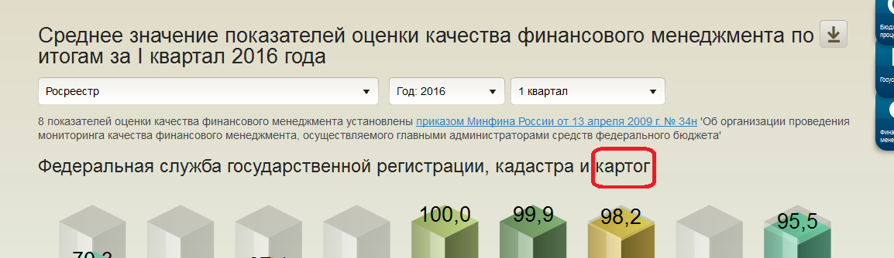

Добавить данные в !Конфигурацию! для представления в отчете:{
"periodInfo" : {
"format" : "d.m.Y",
"dataSourceRef" : {
"uuid": "b0e73a65-5a16-4213-81b5-fd62b4860de7",
"version": "14.07.2016 12.48.49.488",
"name": "dataSourcesMonit"
}
},
"settings": {
"expression": "$date",
"viewFormat": 0,
"periodicity": 0
}
}
"sideTextItems": [{
"control": "WebReports.Controls.Text.SideText",
"position": 0,
"markup": {
"control": "WebReports.Controls.Text.Markup.MarkedProcessor"
},
"template": {
"control": "WebReports.Controls.Text.Templaters.HandlebarsTemplate"
},
"text": "<div id='title' style='color: #000'>Лучшее ведомство по финансовому менеджменту по состоянию на 01.{{indicator 'indicatorName'}}{{getPeriodInfo '.$Y' 0 0}}</div>",
"indicators":[{
"control": "WebReports.Controls.Indicators.Text",
"name": "indicatorName",
"expression": "var x = $.ctx.parameters.paramPeriod.getMonth($.ctx.parameters.paramPeriod); if (x === 0 ) {return '1';} if (x === 3) {return '2';} if (x === 6) {return '3'} return '4'; ",
"cases": [
{ "key": "1", "text": "04" },
{ "key": "2", "text": "07" },
{ "key": "3", "text": "10" },
{ "key": "4", "text": "01" }
]
}]
}]
EPBS_006_013_widget_section MDXОбрезается надписьВ рубрике "Финансовый менеджмент" в отчете "Среднее значение показателей оценки качества финансового менеджмента по итогам..." обрезаются наименования ГАБС, например, при выборе Росреестр и МЧС России Решение: Находим запрос который выводит данную информацию. Выглядит он примерно так: SELECT
non empty {[KVSR].[<%EPBS_006_013_widget_4_filterNamePersona%>]}DIMENSION PROPERTIES [KVSR].[CLSCode], [Tab1] ON ROWS,
non empty {<%period(paramPeriod, '[Periods].[04-{YYYY}999{Q}]')%>}ON COLUMNS
FROM CLQR01.DB
И для того, что бы запрос выводил информацию полностью стоит добавить тег , [Tab2] в некоторых случаех и добавляют несколько тегов , [Tab2], [Tab3], [Tab4], [Tab5], [Tab6] пример:SELECT
non empty {[KVSR].[<%EPBS_006_013_widget_4_filterNamePersona%>]}DIMENSION PROPERTIES [KVSR].[CLSCode], [Tab1], [Tab2], [Tab3], [Tab4], [Tab5], [Tab6] ON ROWS,
non empty {<%period(paramPeriod, '[Periods].[04-{YYYY}999{Q}]')%>}ON COLUMNS
FROM CLQR01.DB
Записать:Что стоит еще описать:
Структура JSON файла. |